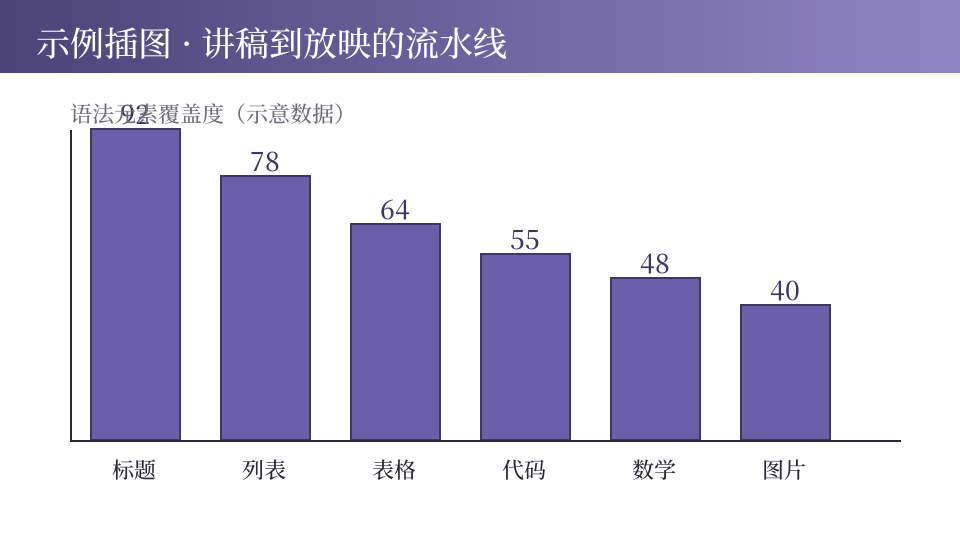

mdshow 引擎语法覆盖验证稿 · 一份稿子测尽所有格式
这是普通段落，验证默认字号、行高与中文避头尾。紧邻的物理行会合并为同一段落（中文直排，不断句）。
行内代码：标记术语与文件名有序列表与无序列表分步规则一致；下面隔一个段落再起新表，起始号直接取自首项：
| 行内语法 | 书写示例 | 渲染效果 | 备注 |
|---|---|---|---|
| 粗体 | 星号包裹 | 重点词 | 常用 |
| 着重号 | 星号单包 | 强调词 | 中文规范 |
| 删除线 | 双波浪 | 订正 | |
| 链接 | 方括号 | 示例 | 外链 |
| 数学 | 美元符 | E=mc2 | 行内公式 |
表头深字、斑马纹、四档对齐（左/默认/居中/右）全部生效。
def fib(n):
a, b = 0, 1
while a < n:
print(a, end=" ")
a, b = b, a + b
fib(100) # 0 1 1 2 3 5 8 13 21 34 55 89围栏代码块：等宽字体、深底浅字、右上角语言徽标；代码内容原样转义，不做行内解析（标记符号与美元符都安全）。
行内公式：质能方程 E=mc2，复杂度 O(n log n)，条件概率 P(x | y)。
展示公式独立成行居中；词性分明排版：单字母变量斜体、函数名与多字母标识符正体、大 O 记号保持正体、条件竖线自动留气口。
引用块是容器：大引号加左竖线，适合摘录原话与需求。内部嵌 AIGC 水印，容器与标记正交。
引用块不计入分步，翻页即整块出现。

整行图片渲染为居中图版：限高防溢出、圆角加投影；支持本地相对路径与网络 URL。
整行双括号渲染为虚线占位卡，构建时控制台告警提醒补图；行内出现则收窄为小占位标记，如 占位。两者配合：写稿期用占位，定稿期换真实图片。